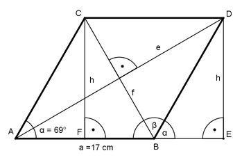

Aufgabe 46 Wie groß sind die Diagonalen e und f der Raute?

Die Seiten einer Raute sind gleich lang. Die Diagonalen e und f stehen senkrecht aufeinander und halbieren sich und die Winkel der Raute. β = 180° - α = 180° - 69° = 111° Im Dreieck BED: h sin α = --- |*a a sin α * a = h h = 0,9336 * 17 cm = 15,9 cm Im Dreieck AED: h sin α/2 = --- |*e e sin α/2 * e = h |:sin α/2 h 15,9 cm e = ---------- = ----------- = 28,1 cm sin α/2 0,5664 Im Dreieck FBC: h sin β/2 = --- |*f f sin β/2 * f = h |:sin β/2 h 15,9 cm f = ---------- = ----------- = 19,3 cm sin β/2 0,8241